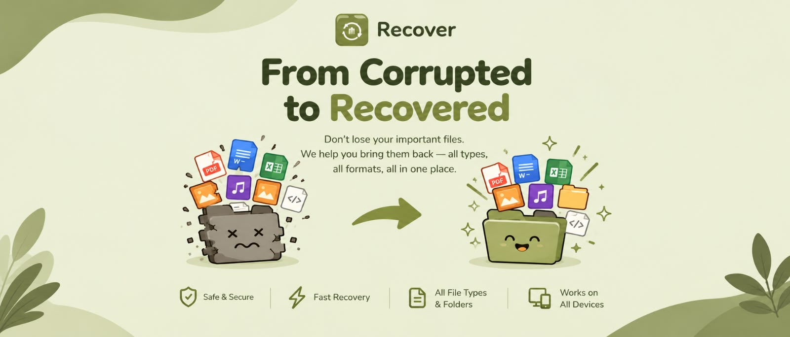

Corrupted File Repair
Rebuild broken headers, trailers, and structure for PDF, JPEG, PNG, DOCX, XLSX, ZIP and more.

FalconDataRescue analyzes damaged, deleted, or partially corrupted storage and reconstructs only what can be validated — preserving the original evidence at every step. No invented bytes, no silent overwrites.
Rebuild broken headers, trailers, and structure for PDF, JPEG, PNG, DOCX, XLSX, ZIP and more.
Scan live NTFS drives at the $MFT level to restore files deleted outside the Recycle Bin.
Signature-carve recoverable files from raw forensic images (.dd / .raw / .img / .e01).
Reassemble scattered data runs and visualize how fragments relate to the whole file.
Every result carries a validation score so you recover only what can be proven intact.
Summarize extracted text, entities, and evidence to triage results quickly.
Launch the recovery workspace and start analyzing your files, drives, or disk images.
Don’t lose your important files.
Analyze, recover, and validate your data—all in one place.
Evidence-safe recovery • Validation • AI-assisted review
Preserve the original evidence, extract recoverable fragments, validate the reconstructed output, and use AI to review the evidence without inventing missing bytes.